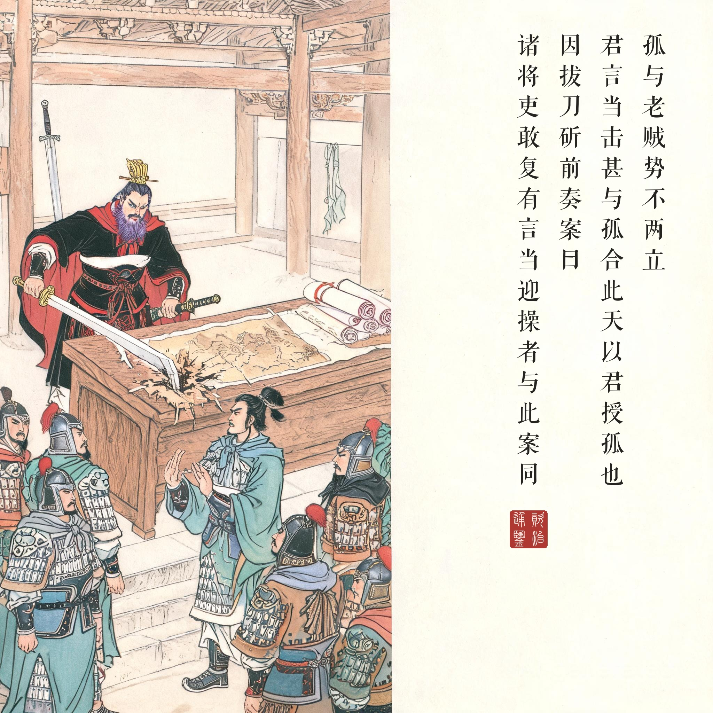
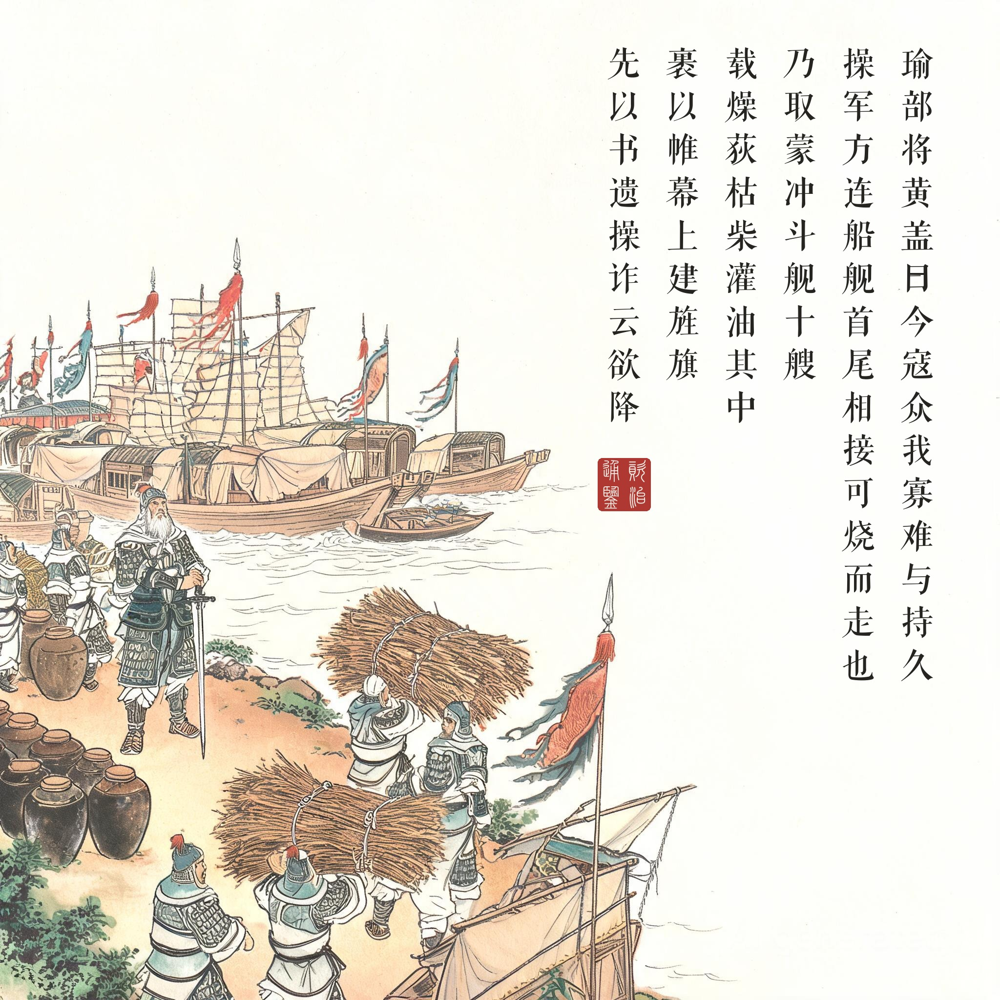
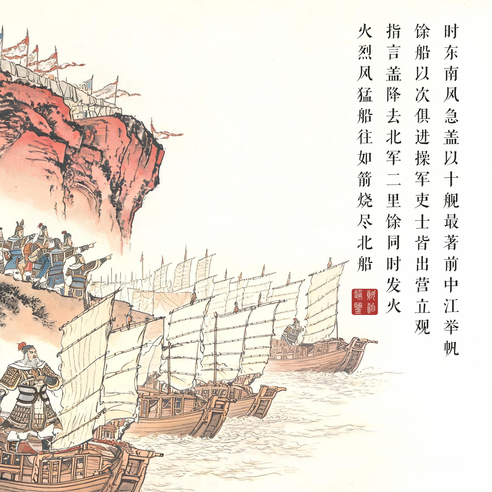
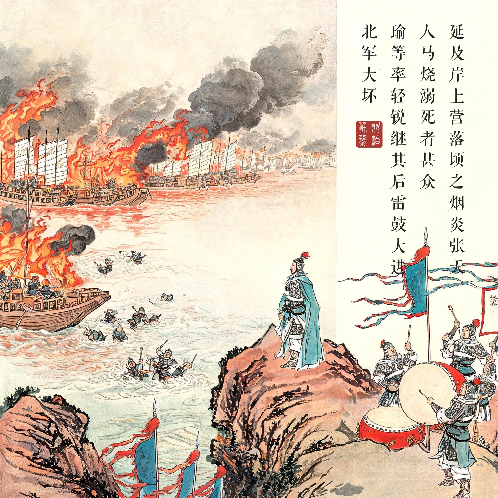
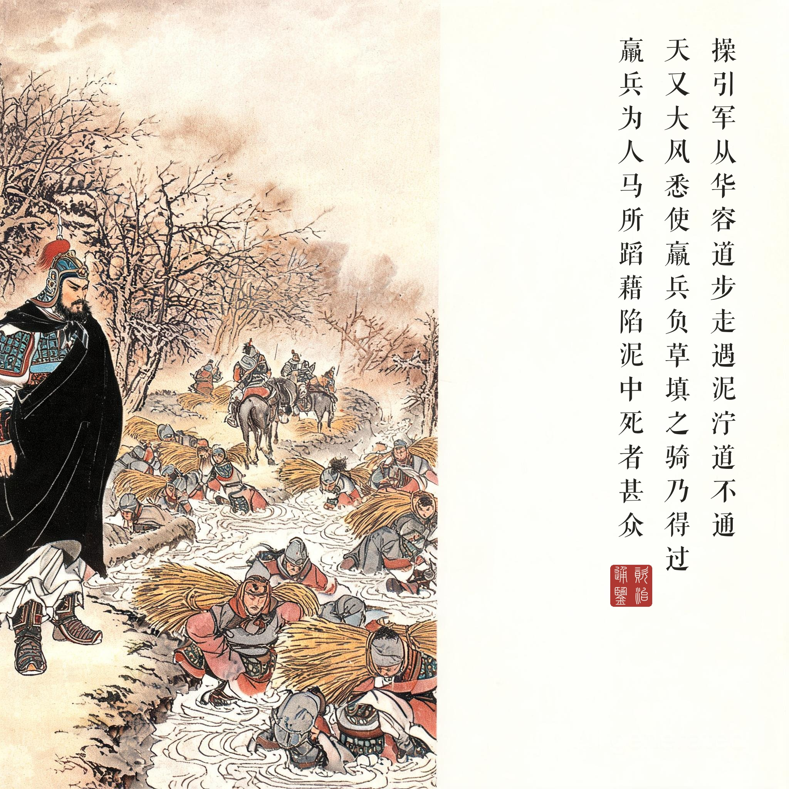

《资治通鉴 · 卷第六十五 · 汉纪五十七》孝献皇帝庚建安十三年（公元 208 年）
（据 daizhigev20《资治通鉴》底本节录。底本卷内叙事次第依《通鉴》考异剪裁，与《三国志》纪传详略不同）
孤与老贼势不两立，君言当击，甚与孤合，此天以君授孤也！”因拔刀斫前奏案曰：“诸将吏敢复有言当迎操者，与此案同！”……瑜部将黄盖曰：“今寇众我寡，难与持久。操军方连船舰，首尾相接，可烧而走也。”乃取蒙冲斗舰十艘，载燥荻、枯柴，灌油其中，裹以帷幕，上建旌旗，预备走舸，系于其尾。先以书遗操，诈云欲降。时东南风急，盖以十舰最著前，中江举帆，馀船以次俱进。操军吏士皆出营立观，指言盖降。去北军二里馀，同时发火，火烈风猛，船往如箭，烧尽北船，延及岸上营落。顷之，烟炎张天，人马烧溺死者甚众。瑜等率轻锐继其后，雷鼓大进，北军大坏。操引军从华容道步走，遇泥泞，道不通，天又大风，悉使羸兵负草填之，骑乃得过。羸兵为人马所蹈藉，陷泥中，死者甚众。
孙权说：“我与老贼势不两立，你说应当迎击，正合我意，这是上天把你授给我啊！”于是拔刀斫前面放文书的案几，说：“诸将吏谁敢再说该迎曹操的，与这案几同样下场！”……周瑜部将黄盖说：“如今敌众我寡，难以持久。曹操的船舰首尾相连，可以用火烧跑他们。”于是取蒙冲斗舰十艘，装载干燥的荻草、枯柴，灌油其中，外面裹上帷幕，上面立起旌旗，又预备好快艇，拴在船尾。先送信给曹操，谎称打算投降。当时东南风急，黄盖以十舰在最前面，江心举起船帆，其余船只依次跟进。曹操军中官兵都出营站着观看，指着说黄盖来降了。离北军二里多，十船同时点火，火烈风猛，船快如箭，烧尽北船，火势蔓延到岸上营寨。顷刻之间，烟火冲天，人马烧死溺死的很多。周瑜等率轻锐部队跟进，擂鼓大进，北军彻底崩溃。曹操带兵从华容道步行撤退，遇到泥泞，道路不通，天又刮大风，就让瘦弱的士兵背草垫路，骑兵才得以通过。羸兵被人马践踏，陷进泥里，死掉的很多。
一场外交会议与一场东南风。赤壁之战在《通鉴》里被剪成两件互为因果的事：斫案之前的江东庙算（鲁肃定“迎”与“击”的死局、周瑜拆“八十万”的虚数），和交战当日的风向。司马光不写舌战群儒的演义场面，只留一刀斫案——因为这一刀才是战略决断的物证：孙权砍掉的不是案角，是退路。有趣的是，案几这帧画面在传统连环画里几乎从不缺席，画家们对“刀入木三分”的偏爱，说明读者都明白这一幕的分量。
“诈降”是画眼。黄盖火船的全部杀机都在伪装里：易燃物上要“裹以帷幕”“上建旌旗”——把火药桶画成仪仗队。而北军“出营立观，指言盖降”是最有悲剧感的一群旁观者：胜利者以看客心态围观自己的葬礼。《通鉴》在此不加议论，只并置两个画面——立观之众与二里外的同时发火，叙事的讽刺自己会说话。
华容道的泥。演义给华容道安排了关云长的义释，《通鉴》只给了泥泞、大风和羸兵。“悉使羸兵负草填之，骑乃得过”——用最弱的士兵的命铺路，让骑兵踩着自己的袍泽逃命。这一段冷笔比任何演义桥段都更残酷，因为它写的是战争对“自己人”的消耗。赤壁之后曹操终身再未大举渡江，三国鼎立的地理骨架就此长成。